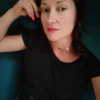

Caricamento...
| 1974 – 2006 | Nato a Potenza, mi laureo in Lingue e Letterature Straniere. Negli anni sperimento diverse forme espressive: scrittura, video, arte digitale. |
|
Premio – Potenza Film Festival Il tempo della fioritura Premio Fastshort – Dams Film Festival con Il tempo della fioritura Premio del Pubblico – Pisticci Film Festival con Il tempo della fioritura |
|
| 2010 – 2014 | Fonder di una casa di produzione video: ho scritto, diretto e prodotto videoclip, documentari, spot, corporate e due episodi di una web-serie sci-fi. |
|
DAMASH - Vizio e regole Protocollo S ECNEPHIAS - Vipra Negra |
|
| 2015 – 2018 | Trasferito a Bologna, lavoro alla produzione di contenuti per la comunicazione e promozione territoriale come sceneggiatore, regista e videomaker. |
|
COVER – Jóga FORMES EMBRYO |
|
| 2019 – 2023 | A Milano continuo gli studi sulla produzione culturale durante la crisi COVID, approfondendo le innovazioni digitali nelle strategie e nei contenuti. |
|
Art a Porter, Spazio HUS – Milano Finalista “Un futuro possibile, plausibile, auspicabile” – Spazio Eclissi ACDC – MUSE Trento, finalista |
|
| 2021 – 2022 |
Innocult Program – MEET Digital Culture Center:
H.E.Arts Innocult Program – Avvio progetto AQVAM |
| 2023 |
Pubblicazione
Neutropoli, Zacinto Edizioni |
| 2024 – 2025 |
La poesia mi ha indicato la via, il cinema me l’ha mostrata.
Oggi lavoro con AI, dati, CGI e ogni strumento che mi permetta di restituire lo stupore
davanti alle forme che il bello e l’ignoto possono assumere. |
| 2024 | Cantiere Poetico per Santarcangelo |
| 2025 |
Spine Festival (Padova) Inverso Infesta (Roma) |
| 31/01/2026 | Museo Pecci (FI) – Pecci Book Festival 2026 |



FABIO VOLPI (dies_)
Autore musicale, collaboratore multidisciplinare
Formato come graphic designer e architetto, è stato membro del collettivo Otolab dal 2001, realizzando eventi multimediali in Europa e Nord America. Nel 2012 avvia il progetto Dies_, dedicato al projection mapping e alle performance audiovisive.
MARILINA CIACO
Autrice di testi per ambienti poetici virtuali, editor dei contenuti
Scrittrice e critica letteraria, dottore di ricerca in Letteratura Contemporanea e Media Studies. Collabora con l’Università di Bologna e l’Università di Zurigo. Le sue ricerche vertono su poesia contemporanea e scritture sperimentali. Autrice di: *Gli anni del disincanto*, *Ghost Track*, *Intermezzo e altre sinapsi*.
GIORGIO FUNARO
Collaboratore multidisciplinare
Artista specializzato in Motion & Visual Design e Light Art. Realizza contenuti visivi generativi per eventi, brand e festival, integrando approcci immersivi tra luce, video e performance.
ANTONIA BRUNO
Assistant Professor in Microbiologia – Università Milano-Bicocca
Biologa specializzata in biodiversità microbica e metagenomica. Coordina progetti su microbiomi dell’acqua, degli ambienti costruiti, del cibo e della pelle umana.
GIULIA AGOSTINETTO
Program Manager, GSK Tech – Belgio
PhD in bioinformatica, si occupa di visualizzazione e analisi di dati multi-omics. Autrice di ricerche su microbioma, biodiversità e metodi data-driven.
ELISA LONGO
Autrice, poetessa, performer e giornalista
Curatrice del programma “Vocale” su Fango Radio. La sua ricerca unisce voce, poesia, arti sperimentali e comunicazione sociale.
CEREBRO
Idea Generator
Collettivo informale nato nel 2020 durante la pandemia. Lavora tra poesia e STEAM, usando data-viz, new media art, video e musica per amplificare la percezione attraverso pratiche phygital.
licenza Creative Commons Attribution
http://creativecommons.org/licenses/by/4.0/
"Lowpoly People + Waldo"
link — Loïc Norgeot
"WIP - Lowpoly People - 1"
link — Loïc Norgeot
"Freebie - Lowpoly People"
link — Studio Ochi
Musiche di Dies_
Inner Tune — Pixabay
Grand_Project — Pixabay